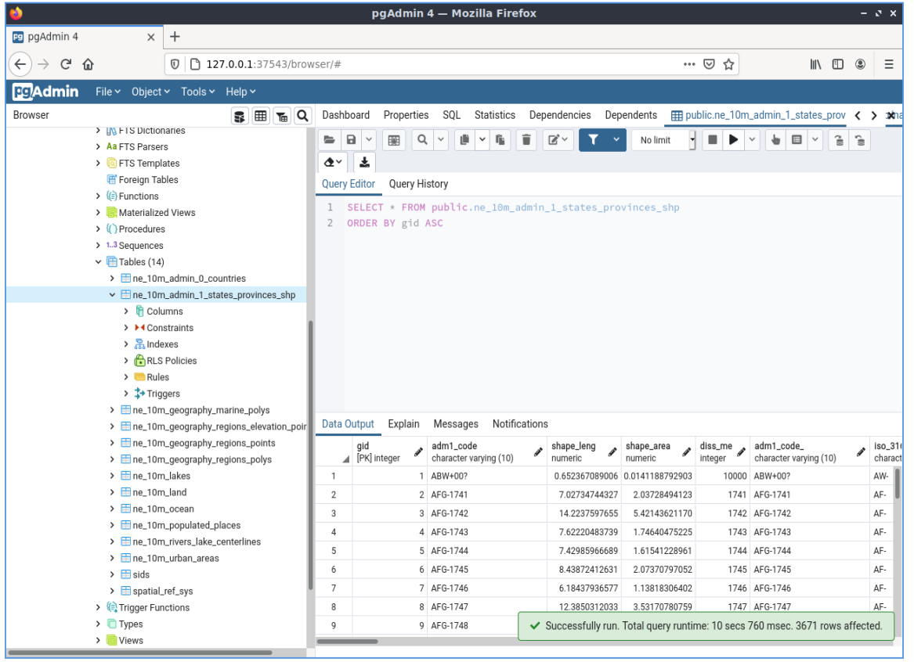

PostGIS¶
Database spaziale¶
PostGIS abilita spazialmente il popolare database relazionale PostgreSQL, permettendogli di essere usato come database back-end per sistemi informativi geografici (GIS) e applicazioni di web-mapping.
PostGIS è stabile, veloce, conforme agli standard, con centinaia di funzioni spaziali ed è attualmente il database spaziale Open Source più usato. PostGIS è usato da diverse organizzazioni di tutto il mondo, tra cui agenzie governative avverse al rischio e organizzazioni che immagazzinano terabyte di dati che servono milioni di richieste web al giorno.
L’amministrazione del database è disponibile per il desktop e il web tramite pgAdmin, phpPgAdmin, e altri. L’importazione/esportazione dei dati può essere fatta da strumenti a linea di comando (shp2pgsql, pgsql2shp, ogr2ogr, dxf2postgis) o da client GIS desktop e web. Questi client possono anche mappare e manipolare le tabelle di dati spaziali PostGIS.


Caratteristiche principali¶
Centinaia di funzioni spaziali
Buffer, unioni, sovrappozioni, distanze e molto altro
Integrità transazionale ACID
Indice spaziale R-Tree
Supporto multi-utente
Blocco a livello di riga
Replicazione
Partizionamento
Sicurezza basata sui ruoli
Table-spaces, schemi
Standard implementati¶
Conformi agli standard OGC (SFSQL)
Dettagli¶
Sito web: http://postgis.net
Licenza: GNU General Public License (GPL) versione 2
Versione Software: 3.3.3
Piattaforme Supportate: Windows, Linux, Mac
Interfacce API: SQL
Supporto: OSGeo service providers